Customer.ID Gender Age City Membership.Type Total.Spend
1 101 Female 29 New York Gold 1120.20
2 102 Male 34 Los Angeles Silver 780.50
3 103 Female 43 Chicago Bronze 510.75
4 104 Male 30 San Francisco Gold 1480.30
5 105 Male 27 Miami Silver 720.40
6 106 Female 37 Houston Bronze 440.80
Items.Purchased Average.Rating Discount.Applied Days.Since.Last.Purchase
1 14 4.6 TRUE 25
2 11 4.1 FALSE 18
3 9 3.4 TRUE 42
4 19 4.7 FALSE 12
5 13 4.0 TRUE 55
6 8 3.1 FALSE 22
Satisfaction.Level
1 Satisfied
2 Neutral
3 Unsatisfied
4 Satisfied
5 Unsatisfied
6 NeutralProject 2: Analyzing Customer Behavior
Abstract
This report covers a range of data focused on customer behavior and spending patterns over various demographic and membership categories. The study focuses on how the total amount spent by a customer varies depending on age grouping and membership type as well as covering the relationship between items purchased and total spent, including differences in customer ratings across different cities. In addition, correlations between total spend and key factors such as days since last purchase, discount application, and satisfaction level are explored.
The analysis also explores the age distribution within membership categories, gender-based spending patterns, and city-level variations in purchasing behavior. A range of visualizations that include box plots, bar charts, and correlation graphs are used to highlight trends, relationships, and potential insights for effective business decision-making.
Introduction
Understanding customer behavior is critical for businesses seeking to optimize marketing strategies, enhance customer retention, and increase overall profitability. This report aims to uncover key insights into spending patterns, demographic influences, and satisfaction dynamics within a customer dataset. By analyzing spending behavior across membership types, age groups, and cities, the study identifies how demographic and behavioral factors influence total expenditure and customer satisfaction.
Results
1. What is the distribution of total spent across different membership types? How does total spend vary by age group?
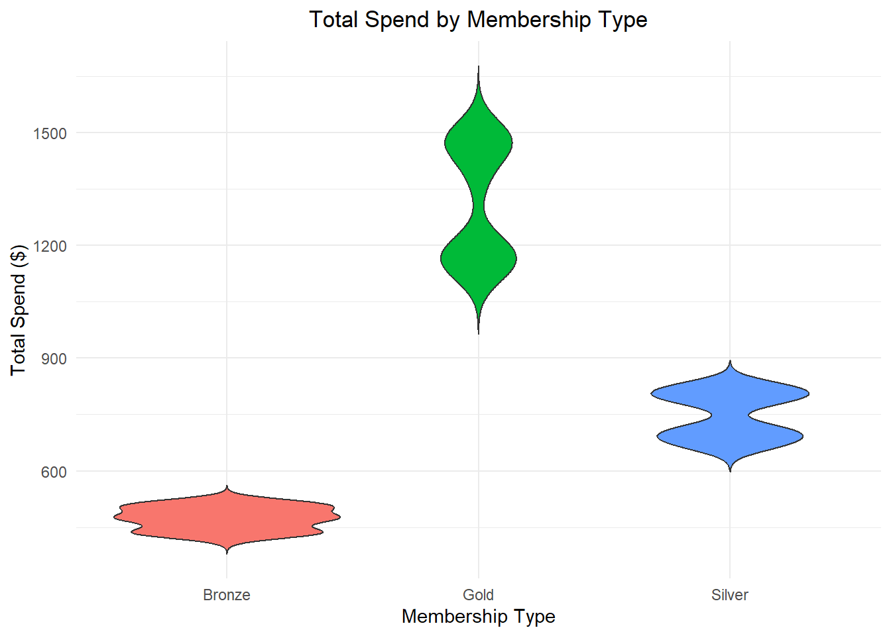
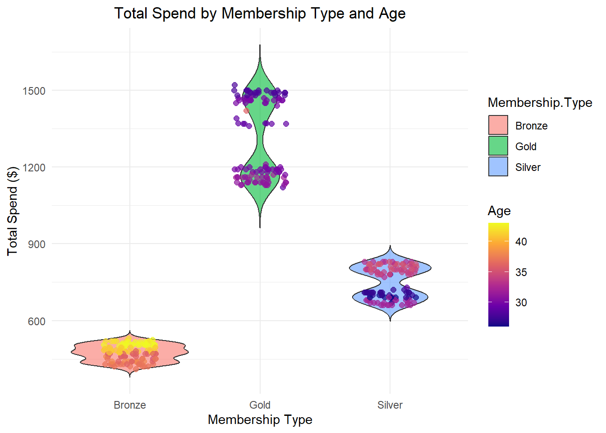
The violin plot demonstrates the distribution of total spent across all membership types while also showing the overall age range each membership type has.
Membership Bronze shows a low, short, and wide plot indicating a more consistent amount spent in total, between $400-575. The average age within also demonstrates that individuals with Bronze are older on average.
Membership Silver shows a medium-in-height, taller plot which shows a more variable amount spent in total, between $600-900. We also see that Silver has an average user age younger than Bronze, but still older than Gold
Membership Gold shows a narrow, very tall plot that illustrates a large range in total spent ($950-1625) that is much greater than the other memberships. It is also clear that GOld features the youngest age demographic.
2. Is there a relationship between the number of items purchased and total spend?
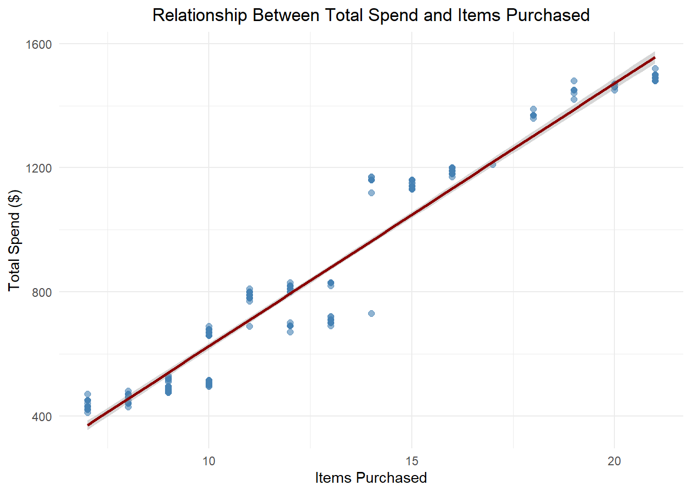
The relationship between items purchased and amount spent is illustrated above. Here, we can see a positive, strong linear relationship between the two. This tells us that customers purchase items of similar value and that there is either little interest in expensive/cheap items, or all items are of similar value.
3. How do average ratings differ by city?
# A tibble: 6 × 2
City Average_Rating
<chr> <dbl>
1 San Francisco 4.81
2 New York 4.54
3 Los Angeles 4.17
4 Miami 3.93
5 Chicago 3.46
6 Houston 3.19[1] 4.017193From this table, San Francisco has the highest average rating at 4.81 and Houston has the lowest at 3.19. The average mean of the six cities is roughly 4.02.
4. Visualization: Bar chart or box plot showing average rating by city
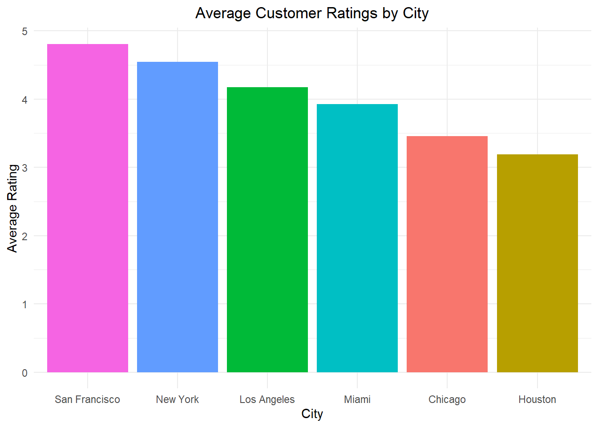
Visualized, the difference in average rating is much more apparent. This may indicate issues surrounding service quality, customer interest, product availability, or customer support in locations with lower ratings.
5. What is the correlation between days since last purchase and total spend?
[1] -0.5400891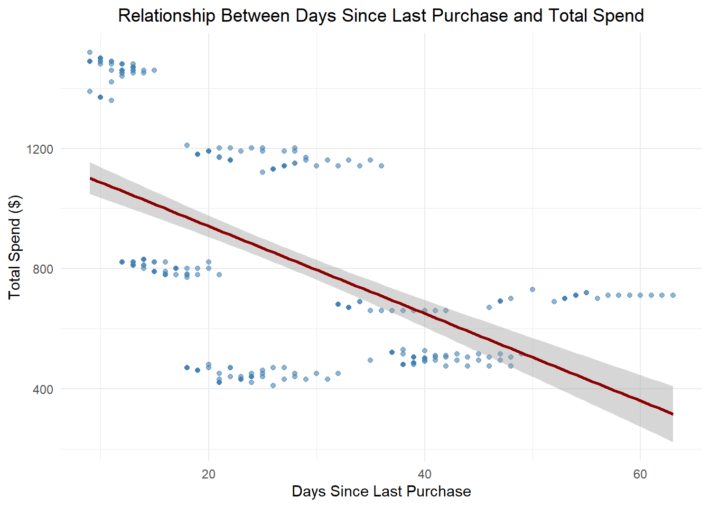
The data shows a correlation coefficient of -0.54. Visualized with the graph, we can see how this represents a moderate negative relationship between total spent vs days since last purchase.
This tells us that customers who made a purchase recently tend to spend more while customers whose last purchase was longer ago tend to spend less.
In practical terms, this implies that engaging with customers soon after their latest purchase may increase revenue and cutsomer lifetime value.
6. What is the impact of discount application on total spend?
# A tibble: 2 × 4
Discount.Applied Average_Spend Median_Spend Count
<lgl> <dbl> <dbl> <int>
1 FALSE 903. 801. 175
2 TRUE 787. 691. 175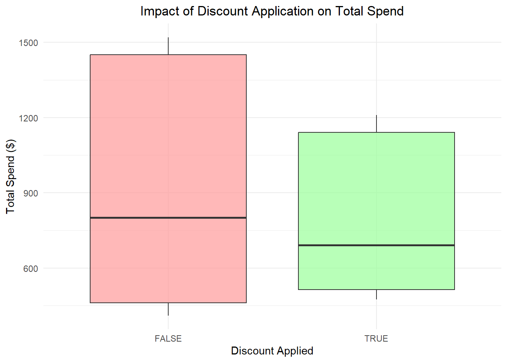
The barplot shows a clear difference between total spent with and without discounts. On average, customers without a discount will spend $903 and customers with a discount will spend $787.
The box plot indicates less spread and a lower average for discounted purchases which may suggest that discounts attract price-sensitive customers who spend less overall.
This may also indicate that, rather than encouraging higher-value purchases, the discounts are used on smaller purchases instead of promoting large purchases.
7. What is the age distribution of customers for each membership type?
# A tibble: 3 × 4
Membership.Type Average_Age Median_Age Count
<chr> <dbl> <dbl> <int>
1 Bronze 39.4 39.5 116
2 Gold 29.9 30 117
3 Silver 31.6 32 117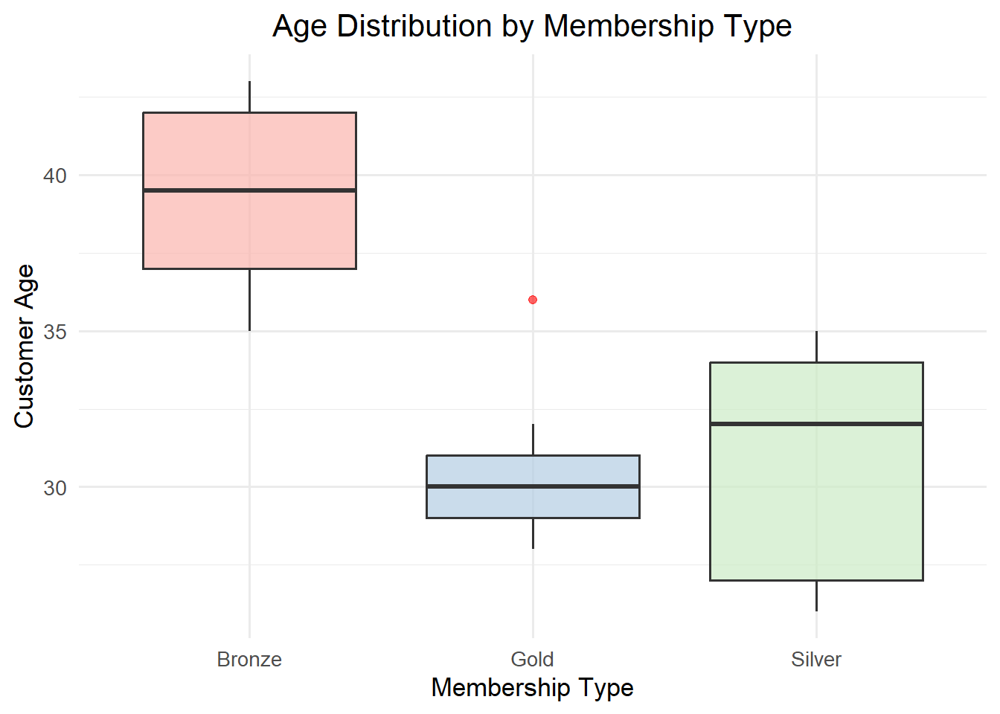
The boxplot shows the following trends:
Bronze Membership is predominantly older individuals around the age of 39.4.
Silver Membership includes the broadest range of ages, suggesting that it may appeal to a larger, more diverse customer base.
Gold Membership has the smallest range around the age of 29.9. This suggests that this membership may be much more appealing to younger customers.
8. How does customer satisfaction level correlate with total spend?
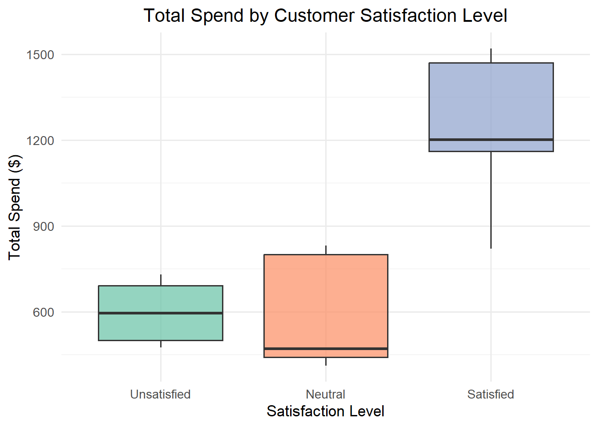
The data here shows that customers who are satisfied with the product spend a significantly higher amount overall while those who are neutral or unsatisfied spend much less, and roughly the same between the two.
This suggests the there is either a very strong loyalty to these stores, or that the products are targetting a very specific interest group.
9. What are the spending patterns of different gender groups?
# A tibble: 2 × 5
Gender Avg_Spend Avg_Items Avg_Discount Avg_Rating
<chr> <dbl> <dbl> <dbl> <dbl>
1 Female 704. 10.8 0.669 3.73
2 Male 987. 14.4 0.331 4.31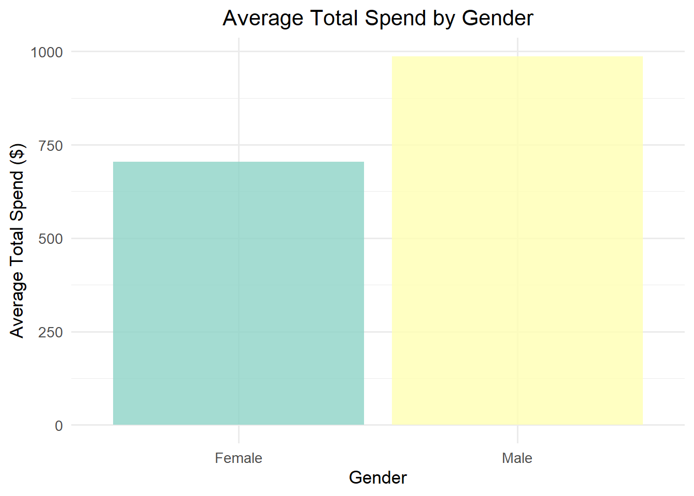
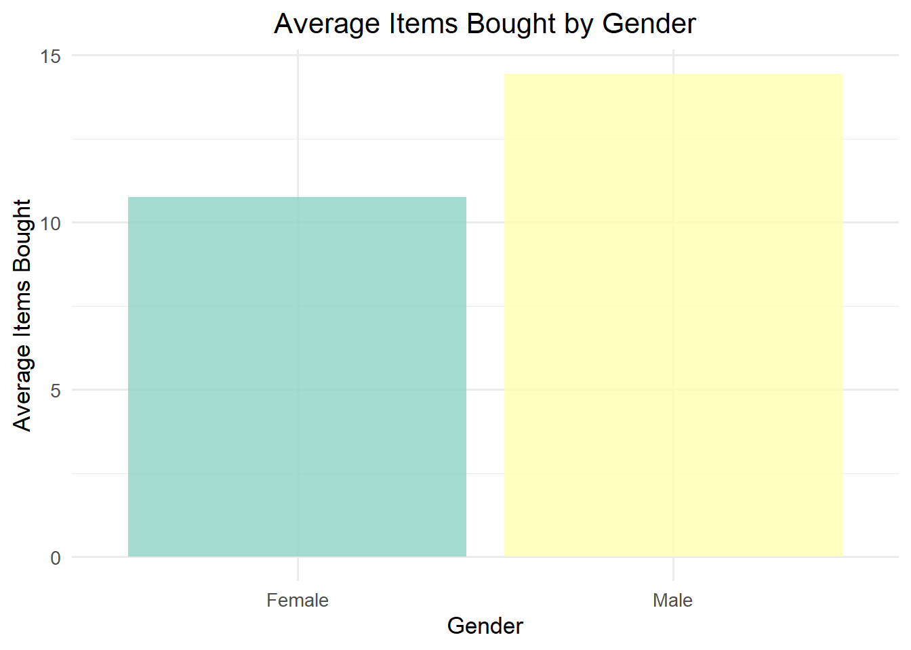
Here we can see the average total spend and the number of items purcahsed organized by gender. Males typically purchase 33% more, spend roughly 40.2% more, and rate 15.5% more than females on average. Females use discounts just over twice as often as males.
This shows that the products being sold at these locations are more appealing to men, and could suggest that introducing more items that are appealing to females could increase the amount of items sold.
10. How does the number of items purchased vary by city?
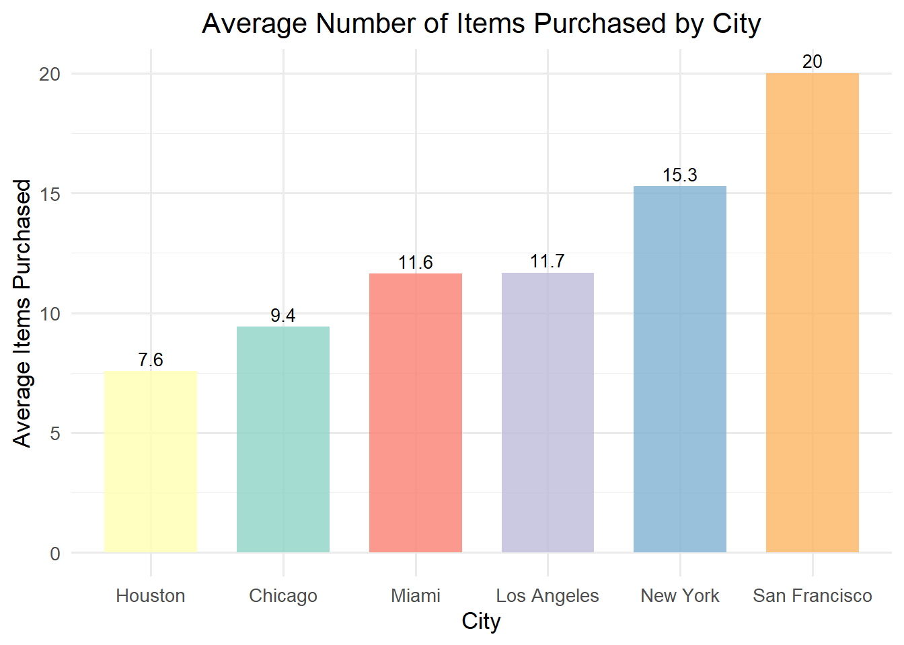
The graph above covers the six cities included in the data in relation to how many items were purchased per person on average. The cities with the most items purchased on average is San Francisco with 20 items per person, and the lowest is Houston with 7.6 items per person.
The graph displays the average number of items bought per person across six different cities. Each bar represents the mean number of items purchased by individuals in that city, allowing for an easy comparison of buying behavior between locations.
From this graph, you can identify which cities have higher or lower average purchasing activity.
Cities with higher averages indicate stronger consumer engagement or demand with residents there buying more on average.
Cities with lower averages may suggest less consumer activity, smaller markets, or potential opportunities for marketing or sales growth.
San Francisco shows the highest average items bought per person, suggesting stronger purchasing behavior or market engagement compared to the other cities. In contrast, Houston has the lowest average, indicating a lower level of consumer activity or a lack of customer interest.
Conclusion
The analysis provides several insights into customer spending behavior and satisfaction patterns across various demographics and membership groups.
Overall, total spending varies quite noticeably across different membership types and age groups, with younger people making a majority of the gold membership, and the gold membership making up the majority of the overall sales. A strong positive relationship was observed between the number of items purchased and total spend, indicating that higher amounts of small purchases are driving income.
When comparing cities, the average ratings customers gave differed, suggesting varying levels of satisfaction and/or service quality by location. Likewise, spending and purchasing patterns also varied by city which highlights the differences in consumer behavior based on region.
A moderate negative correlation was found between days since last purchase and total spend (an r-value of -0.54) indicating that frequent customers are likely to spend more overall. Additionally, customers who use discounts do not tend to use them on higher-cost purchases, instead using them on smaller purchases.